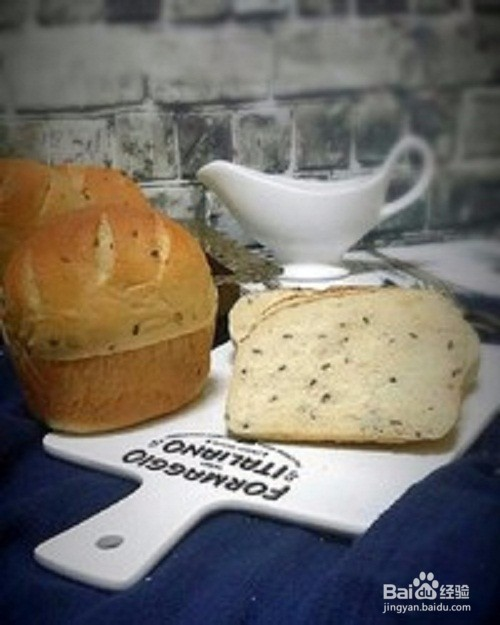

方法/步骤
-
1
试用后油法，将面团揉成团，面包机30分钟即可！牛奶要用凉的，因为面包机揉面温度较高！

-
2
揉好的面团，用手抻开可以抻成薄一些的膜，有一定的扩展性！

-
3
然后揉成团，放入面包机中就行第一次发酵，发酵约1小时，是原面团的2倍大！用手按下去无回缩就证明发酵好了！

-
4
发酵好的面团排气揉光滑，称重

-
5
将面团平均分成5份，揉成光滑的面团！盖上保鲜膜醒发15分钟

-
6
然后揉成你想放的模具中，没有就用纸拖，或可以不用也行。

-
7
将烤箱中放一碗热水保持湿度，把面包生坯放入烤箱就行二次发酵，烤箱温度不易超过30度，发酵40分钟！

-
8
然后烤箱预热180度，上下火加热中下层烤20左右即可！

-
9
软软的很好吃！
